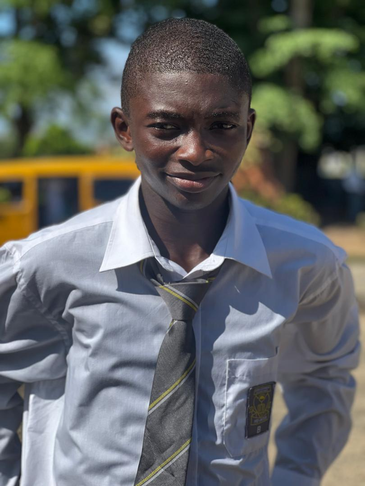

100-Level Student · FUT Minna · Aspiring Web Developer
Hey there! I'm Adamu, a first-year student at the Federal University of Technology, Minna. I enjoy learning how to build things on the web and I'm just getting started.
LETS GET THE CODING STARTED!!!😎
Hi! My name is Imam Adamu Usman and I am a 100-level student at the Federal University of Technology, Minna (FUT Minna), Niger State, Nigeria. I currently study Computer Science and I have a strong interest in technology and I am willing to boost my knowledge more on web development.
Outside of school, I enjoy playing eFootball online and I run a small gaming community where we organise mini tournaments. I believe that discipline and consistency whether in games or in studies — always leads to growth.
I am currently learning HTML and CSS as part of my web development journey, and this page is one of my first projects. I hope to keep building and improving.
| Full Name | Imam Adamu Usman |
| Date of Birth | 2008/01/09 | Institution | Federal University of Technology, Minna |
| Level | 100 Level (Fresher) |
| State Of Origin | Niger State, Nigeria |
| Address | NO 10 Dadin Kowa Estate Minna, Niger State |
| Nationality | Nigerian |
| Interests | Web Development, Online gaming |
Here are some of the small projects I have worked on so far:
This is the first personal webpage I built using only HTML and CSS as part of my university assignment. It includes my biodata, skills, and contact information.
HTML & CSSI am creating a WhatsApp-based eFootball gaming community. I am organising mini tournaments with proper rules, a points system, and match schedules for members.
Community ProjectI am still learning web development and growing. As I continue my studies at FUT Minna, I plan to build more projects.
........In ProgressEmail: ua3225127@gmail.com
Phone: 09036938201
Location: Minna, Niger State, Nigeria
School: Federal University of Technology, Minna